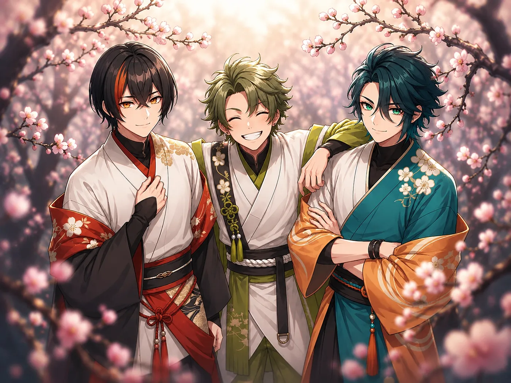

YouTubeSpotifyX
日本の身近な野鳥 × 和ロック
和の心に魂をのせ、いざ Rocking You！

About
目代煎之介めじろ せんのすけが友人である川瀬帝翔かわせ みこと、燕谷航つばめや わたるを誘って結成した、和ロックを軸に活動する三人組アイドルユニット。
茶道、華道、三味線と、それぞれ違うかたちで和の世界に関わってきた三人は、煎之介の思いつきからアイドルとしてステージに立つことに。
まだ活動は手探り状態だが、声も旋律もまっすぐに、トリアティークらしい音楽を届けていく。
Members
Release
Triattique
MVSpotify
Units